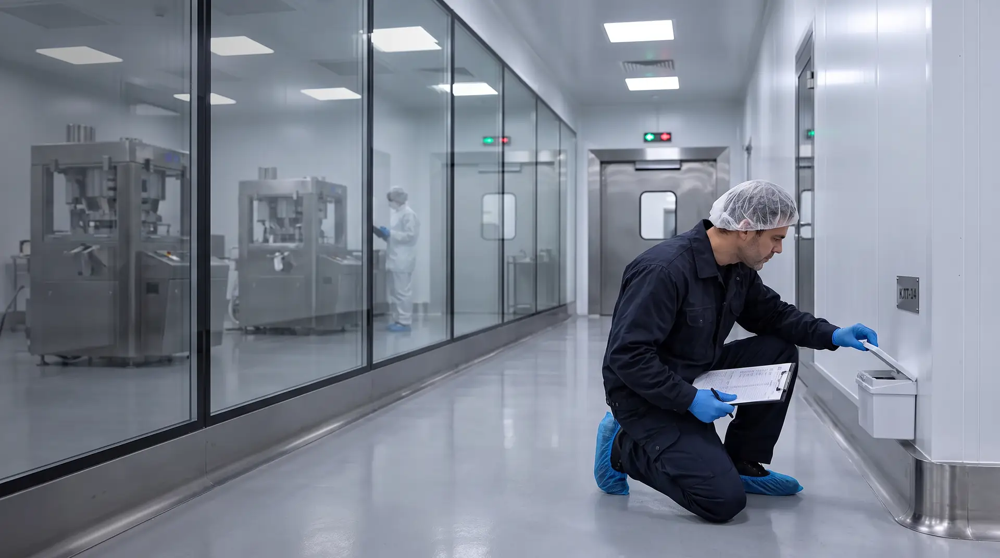
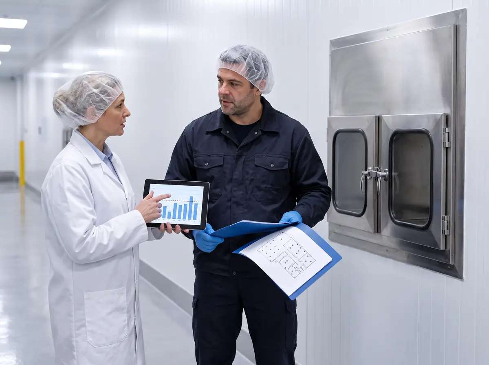
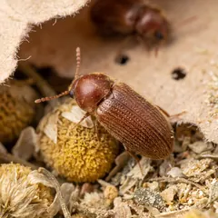
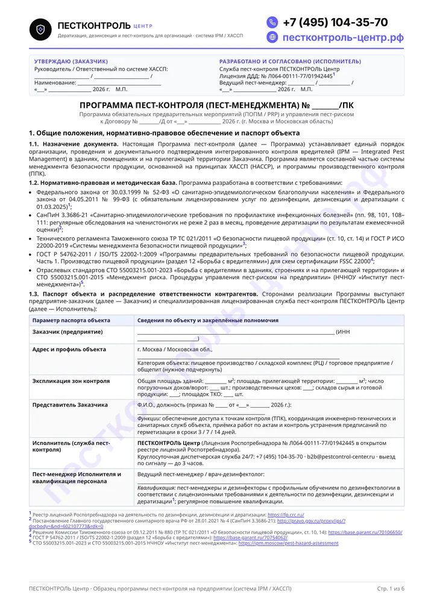
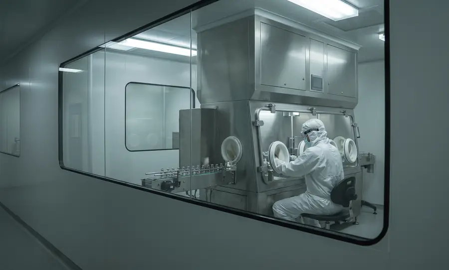
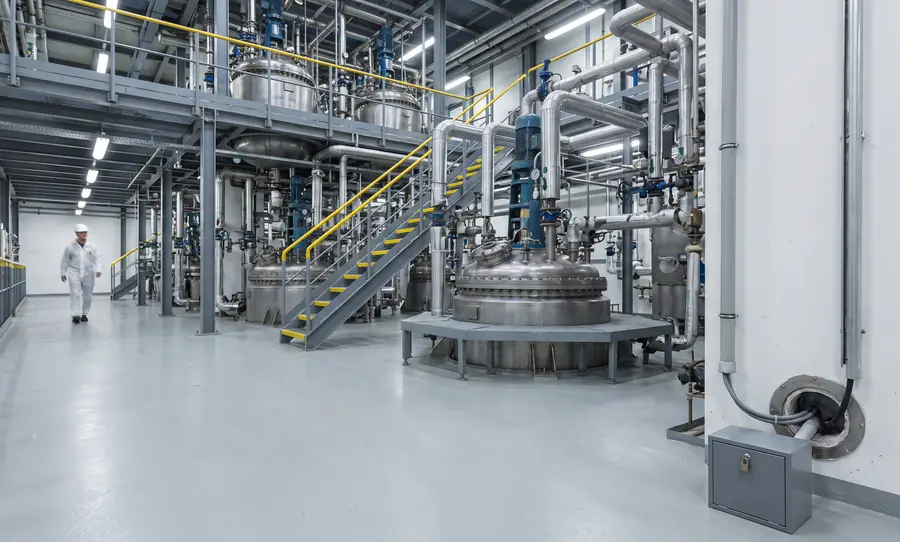
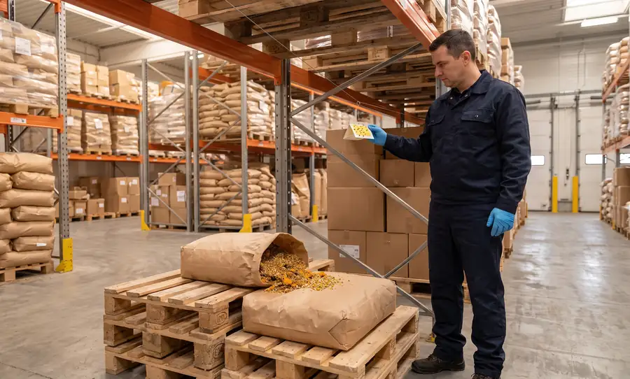

Защита помещений
Помещения проектируют и оснащают так, чтобы обеспечить максимальную защиту от проникновения насекомых и животных. Инспектор проверяет это на месте: двери, шлюзы, проходки, сетки.

Пест-контроль на фармацевтическом предприятии в Москве и Московской области по Правилам GMP ЕАЭС: мониторинг вместо обработок и документы для инспекции и аудита заказчика. Бесплатное обследование и расчёт до договора.
0 из 5 на месте
Отметьте, что уже есть на вашем предприятии. Каждый пункт инспектор или аудитор может сверить по документам и на месте.
Заказать бесплатное обследованиеПест-контроль на фармацевтическом производстве — это документированная система мер, которая не допускает насекомых, грызунов и птиц к исходному сырью, упаковочным материалам, промежуточной и готовой продукции. Её основа — конструкционная защита здания, мониторинг по пронумерованным точкам, анализ трендов и разбор каждого превышения в системе качества. Химические средства — крайняя мера и только там, где продукция не открыта.

Помещения проектируют и оснащают так, чтобы обеспечить максимальную защиту от проникновения насекомых и животных. Инспектор проверяет это на месте: двери, шлюзы, проходки, сетки.
Контроль появления и распространения вредителей входит в перечень мероприятий, для которых нужны утверждённые процедуры и записи о выполнении.
Для фармсубстанций — письменные процедуры применения средств против грызунов, инсектицидов, фунгицидов и фумигантов, чтобы исключить контаминацию оборудования, сырья и АФС.
Помещения защищены от проникновения насекомых, грызунов и других животных, а на складе действует программа профилактического контроля вредителей.
Источники: Правила надлежащей производственной практики ЕАЭС (Решение Совета ЕЭК № 77) и Правила надлежащей дистрибьюторской практики ЕАЭС (Решение Совета ЕЭК № 80). Минимальную кратность плановых обследований задаёт п. 101 СанПиН 3.3686-21: 1 раз в месяц, для объектов особого эпидемиологического значения — не реже 2 раз в месяц. Для зон с более высоким риском для продукции частоту увеличивает программа пест-контроля.
Чем ближе к открытому продукту, тем меньше химии. Яд остаётся за стенами здания, внутри работают ловушки без яда и мониторинг, а в чистых помещениях по умолчанию нет ни того, ни другого.
Забор, парковка, контейнерная площадка, ливнёвки. Запираемые станции с родентицидом — единственное место, где допустим яд.
Станции с приманкойРампы, ворота, тамбуры, вводы коммуникаций, кровля. Ловушки без яда у входов, проверка уплотнителей, сеток и завес, список щелей — инженерной службе.
Ловушки без яда · барьерПриёмка, карантин, сырьё, упаковка, готовая продукция. Ловушки по стенам, феромонный мониторинг вредителей запасов, лампы с клеевым экраном вдали от ворот.
Мониторинг · феромоныТехэтаж, венткамеры, щитовые, столовая, гардеробы. Клеевые мониторы; гель от тараканов — только здесь и по согласованию с отделом качества.
Мониторинг · точечно гельВоздушные и материальные шлюзы, коридоры у чистых зон. Моющиеся мониторы без пылящих материалов — на согласованных местах и по вашей процедуре входа.
Только по СОПЛовушек и средств нет. Контроль — через внешние контуры и сообщения персонала; любая находка — отклонение и поиск пути проникновения.
Без средствШесть групп вредителей, которых чаще всего включают в программу фармпредприятия: от крыс на периметре до точильщиков в растительном сырье.

Периметр и контейнерная площадка, рампы, склады с картонной упаковкой, кабельные вводы и техэтажи.
ТактикаСтанции с приманкой — только снаружи, по периметру здания и забора. Внутри — механические ловушки и мониторы без яда, оценка заселённости на каждом визите.
Станции снаружи · ловушки внутри
Лекарственное растительное сырьё, сборы и фиточаи, сухие вспомогательные вещества растительного происхождения, картонная упаковка.
ТактикаФеромонные ловушки по ярусам стеллажей, осмотр партий при приёмке и в карантине, изоляция заражённой партии. Испытание сырья на заражённость — по ОФС.1.5.3.0002.
Феромоны · входной контроль
Влажные склады, картон, бумажные этикетки и инструкции, подвальные помещения и трапы.
ТактикаКлеевые мониторы у стен и под стеллажами, контроль влажности вместе с инженерной службой, хранение картона на стеллажах, а не на полу и у стен.
Мониторы · влажность
Столовая и пищеблок для персонала, гардеробы, санузлы, тепловые узлы, кабель-каналы между этажами.
ТактикаКлеевые мониторы для поиска очага, гель — точечно и только в непроизводственных зонах, герметизация щелей и вводов.
Мониторы · гель вне производства
Рампы и ворота, контейнерная площадка, трапы и стоки моечных и бытовых помещений, столовая.
ТактикаЛампы с клеевым экраном, которые не видно с улицы, очистка трапов, предписания по воротам и завесам. Электрические лампы-решётки не ставим: они разбрасывают фрагменты насекомых.
Лампы с клеевым экраном
Рампы и навесы, кровля, воздухозаборы вентиляции, открытые ворота склада.
ТактикаСетки и противоприсадочные системы, закрытые проёмы, удаление гнёзд по согласованию с инженерной службой.
Барьер без отравыИнспектор Минпромторга и аудитор заказчика задают похожие вопросы. На каждый в папке должен быть документ, а не устный ответ.
| Что спросят | Что показываете |
|---|---|
| Какая процедура описывает контроль вредителей? | Программа пест-контроля: целевые вредители, контуры и зоны, методы, ответственность, периодичность и формы записей — в структуре вашей СОП. |
| Где стоят точки контроля и почему именно там? | План-схема с номерами точек и обоснованием по оценке риска; номера на схеме совпадают с табличками на стенах. |
| Что показал мониторинг за год? | Ежемесячные отчёты с учётом численности по каждой точке и тренды по зонам и видам. |
| Что сделали при превышении? | Запись о внеплановом осмотре, найденной причине, корректирующем действии и результате повторной проверки. |
| Какие средства применялись и где? | Перечень средств со свидетельствами о госрегистрации (СГР), паспортами безопасности и зонами применения; в отчёте — дата, точка и расход. |
| Кто выполнял работы и есть ли у него право? | Выписка о лицензии Роспотребнадзора, удостоверения специалистов, записи об инструктаже на вашем объекте. |
| Как распределена ответственность с подрядчиком? | Договор с перечнем работ, сроками реакции и обязанностями сторон — для деятельности, переданной на аутсорсинг. |

Цели, зоны риска, точки контроля, пороги и порядок действий при превышении. PDF, 6 страниц. Формы отчётов для фармпредприятия согласуем с отделом качества до старта.
Скачать программу, PDF Журнал пест-контроля: образец и шаблон →Находка в классифицированной зоне — это отклонение, а не повод для обработки. Наша задача — дать отделу качества факты для расследования и закрыть путь проникновения.
По сигналу — внеплановый выезд в течение 3 часов, срочные выезды 24/7. Порядок таких выездов закрепляем в договоре на обслуживание.

Таблетки, капсулы, порошки. Главный риск — склады субстанций и вспомогательных веществ: крахмал, лактоза и сахара привлекают вредителей запасов.

Инъекционные и инфузионные формы. В зонах A и B — ни ловушек, ни средств; акцент на внешних контурах, шлюзах, техэтажах и вентиляции.

Химический синтез и выделение. Письменные процедуры применения средств по п. 4.72 части II GMP, большая территория и наружные установки.

Сборы, экстракты, фиточаи. Феромонный мониторинг точильщиков и огнёвок, осмотр партий при приёмке, изоляция заражённых партий.

Программа профилактического контроля вредителей по п. 36 Правил GDP ЕАЭС: рампы, стеллажи, зоны карантина и возвратов.
Сверяем схему с объектом, восстанавливаем нумерацию точек и с первого месяца ведём отчёты с трендами по зонам и точкам.
Пересматриваем контуры: убираем яд из помещений, усиливаем шлюзы и переходы, фиксируем решение в программе.
Ставим мониторы, вместе с инженерной службой ищем источник влажности и даём предписания по хранению картона.
Принимаем действующую схему и журналы, сохраняем нумерацию точек и переходим без пустых месяцев в отчётности.
Стоимость фиксируем в договоре после бесплатного обследования. На фармпредприятии она зависит от числа зон и требований системы качества сильнее, чем от площади.
Площадь и число контуров, количество точек контроля, классы чистоты и процедура входа в зоны, кратность визитов по программе, формат отчётности.
Визиты по графику, обслуживание точек контроля, ежемесячный отчёт с трендами, предписания службам предприятия и пересмотр программы раз в год.
Обследование и расчёт — 0 ₽. Ночные и выходные окна — без наценки. Безналичный расчёт с НДС и без НДС, документы — через ЭДО или на бумаге.
Правила надлежащей производственной практики ЕАЭС (Решение Совета ЕЭК № 77) требуют, чтобы помещения были спроектированы и оснащены для максимальной защиты от проникновения насекомых и животных (п. 3.4), а контроль появления и распространения вредителей был описан в письменной процедуре с записями о выполнении (п. 4.29). Для производств АФС часть II Правил добавляет письменные процедуры применения средств против грызунов, инсектицидов, фунгицидов и фумигантов (п. 4.72). На инспекции смотрят программу пест-контроля, план-схему точек, отчёты с трендами и разбор превышений.
Приманки с ядом в чистых помещениях мы не применяем. По умолчанию в зонах A–D нет ни ловушек, ни средств: контроль ведётся через внешние контуры — периметр, оболочку здания, склады, технические зоны и шлюзы. Если отдел качества решает, что монитор в классифицированной зоне нужен, его выбирают из моющихся материалов без пылящих элементов и вносят по процедуре входа предприятия.
Минимум задаёт п. 101 СанПиН 3.3686-21: плановые обследования на заселённость членистоногими — 1 раз в месяц, для объектов особого эпидемиологического значения — не реже 2 раз в месяц. Кратность по зонам фиксирует программа пест-контроля по оценке риска: склады сырья, рампы и зоны у шлюзов обычно проверяют чаще, чем административные помещения.
Программа пест-контроля или СОП с целевыми вредителями, зонами и методами; план-схема пронумерованных точек; отчёты осмотров с учётом численности по каждой точке; тренды с уровнями предупреждения и действия; записи о превышениях и корректирующих действиях; перечень средств с СГР и паспортами безопасности; выписка о лицензии подрядчика и удостоверения специалистов; договор с распределением ответственности.
Родентициды остаются снаружи — в запираемых станциях по периметру здания и забора. Внутри работают только механические ловушки и мониторы без яда: грызун, погибший от отравы на складе или техэтаже, — это риск контаминации и вопрос инспектора. Каждая станция и ловушка пронумерована и нанесена на план-схему.
Не уничтожать находку: зафиксировать место и время, сохранить особь и сообщить в отдел качества. Мы выезжаем в течение 3 часов, определяем вид и вероятный источник, проверяем шлюзы, уплотнения и смежные помещения, а результаты передаём для расследования отклонения и плана CAPA.
Да. Для складов действует п. 36 Правил надлежащей дистрибьюторской практики ЕАЭС: помещения защищены от проникновения насекомых, грызунов и других животных, а на складе есть программа профилактического контроля вредителей. Составляем такую программу, ставим и обслуживаем точки контроля и ведём отчётность.
Принимаем действующую программу, схему точек и журналы, сохраняем нумерацию и по итогам обследования дополняем схему. Пустых месяцев в отчётности не появляется, а изменения схемы описываем так, чтобы отдел качества мог провести их через управление изменениями.
Да. С 1 марта 2025 года дезинфекционная деятельность лицензируется. Работы выполняет ООО «Центр дезинфекционных услуг» по лицензии Роспотребнадзора № Л064-00111-77/01942445; выписку из реестра прикладываем к пакету документов.
Да, мы работаем как с НДС, так и без НДС (УСН). Договоры, акты выполненных работ и УПД направляем через системы электронного документооборота (ЭДО) или на бумажном носителе.
Специалист пройдёт контуры от периметра до шлюзов, сверит схему и документы с требованиями GMP и подготовит расчёт. Москва и Московская область.